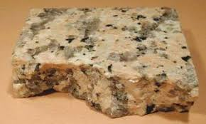
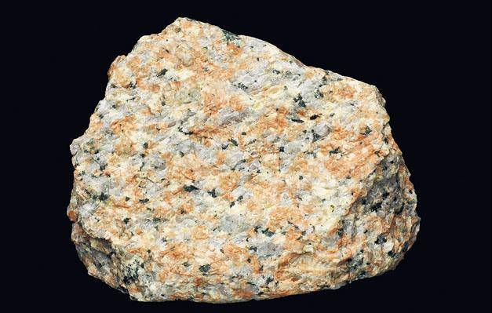

教學錄像 |
是指岩漿或熔岩冷卻凝固後所形成的一種岩石。又分為噴出岩和侵入岩。 噴出岩：在火山爆發後，岩漿噴出地面，再經冷卻形成，所以又稱噴出岩 侵入岩: 是岩漿在地下，侵入地殼內部形成的,所以又稱侵入岩 |
|---|---|
|  https://www.edb.gov.hk/attachment/tc/curriculum-development/kla/pshe/references-and-resources/geography/HK%20Geology%20_Apr2022.pdf |
https://today.line.me/hk/v2/article/3JmzjE |